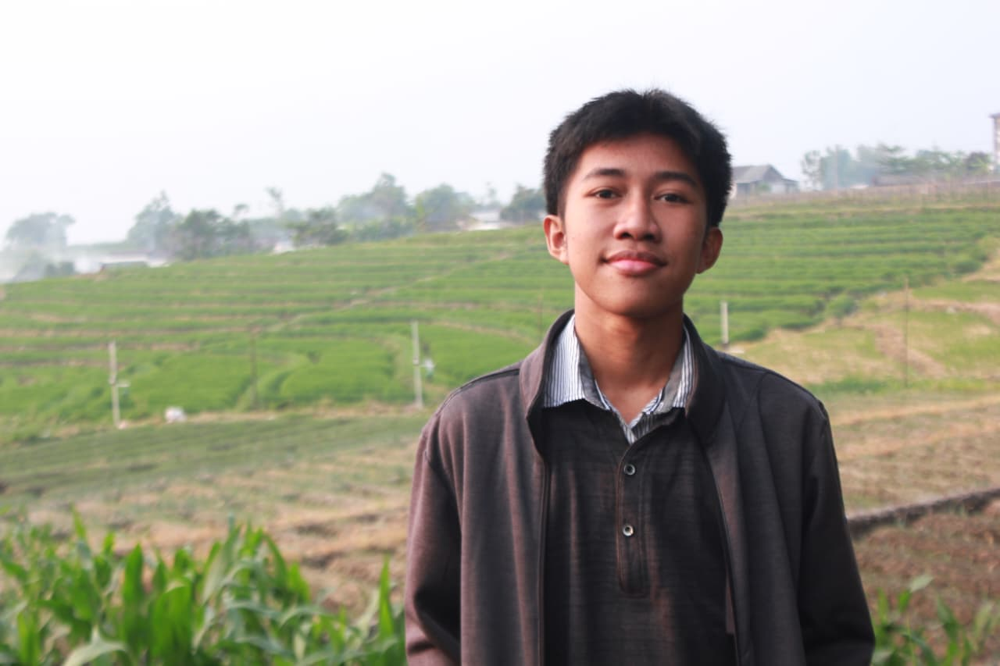
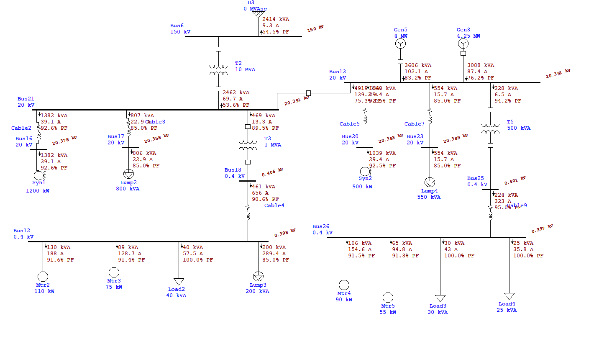
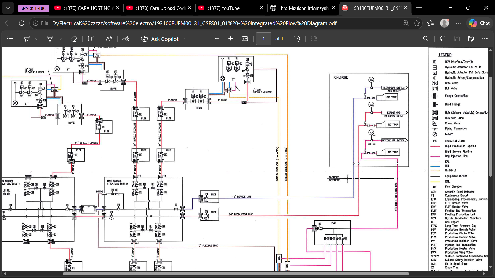
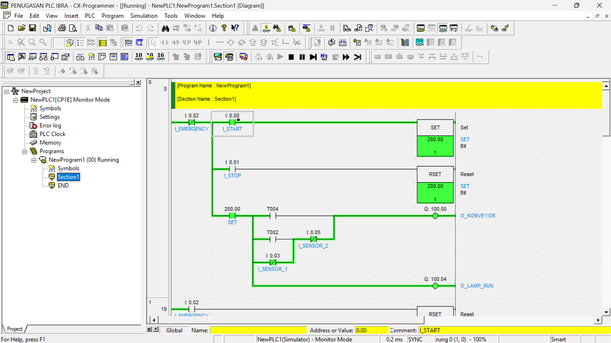
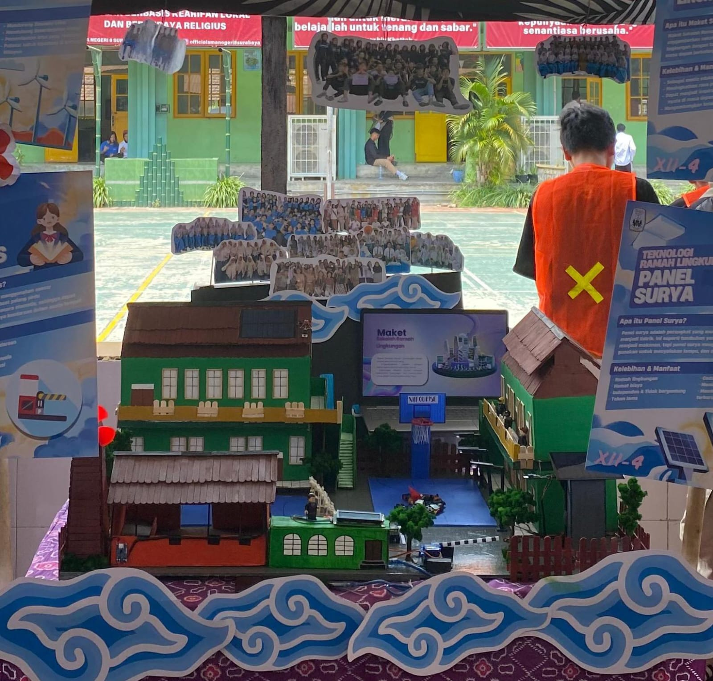
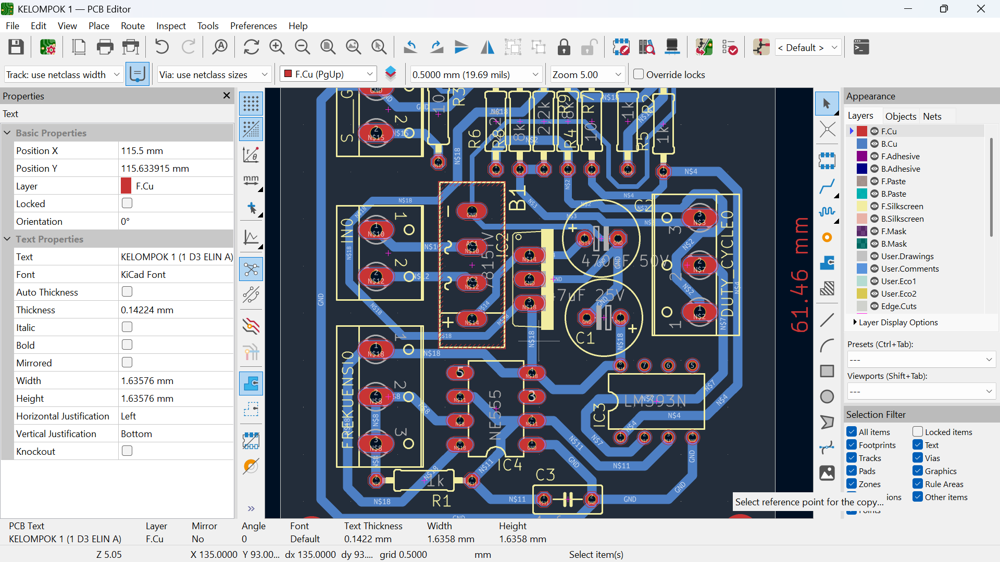

SPECS
Industrial Electrical Engineering Student | Focused on Measurement, Instrumentation & Control Systems
"Mengintegrasikan analisis kelistrikan presisi dengan solusi industri yang praktis."
Mahasiswa D3 Teknik Elektro Industri PENS dengan fokus pada pemodelan sistem tenaga listrik (ETAP), pemrograman kendali otomatis (PLC Omron/Cx-Programmer), serta memiliki pengalaman langsung di lantai pabrik sebagai operator mesin di PT Sumber Energy Industry.

Latar belakang pendidikan teknik, pengalaman praktis di industri, serta motivasi di sektor energi.
Halo, saya Ibra Maulana Irdamsyah. Saat ini saya sedang menempuh pendidikan D3 Teknik Elektro Industri di Politeknik Elektronika Negeri Surabaya (PENS). Saya memiliki ketertarikan yang kuat di bidang measurement, instrumentation, and control system, dengan aspirasi utama untuk berkarir sebagai Field Engineer di industri kelautan (offshore), sektor Oil & Gas, maupun sistem pembangkit tenaga listrik seperti PLTU/PLTGU dan jaringan transmisi/distribusi PLN.
Dalam perjalanan akademik dan pengalaman praktis, saya terbiasa merancang, menyimulasikan, dan menganalisis sistem kelistrikan menggunakan berbagai perangkat lunak standar industri seperti ETAP (analisis aliran daya dan hubung singkat), SCADA, serta Cx-Programmer (logika otomasi PLC Omron).
Saya juga memiliki pengalaman kerja langsung sebagai operator mesin di PT Sumber Energy Industry yang memperkuat pemahaman saya tentang kondisi riil di lantai pabrik, pentingnya prosedur keselamatan kerja (K3), dan kecepatan respon penanganan gangguan. Saya senang menyelesaikan masalah terkait troubleshooting kelistrikan, otomasi industri, dan integrasi energi terbarukan, dengan visi jangka panjang menjadi insinyur yang memberikan dampak nyata dan berkelanjutan di sektor energi.
Politeknik Elektronika Negeri Surabaya (PENS)
D3 Teknik Elektro Industri (NRP: 2325500011)
Operator Mesin di PT Sumber Energy Industry.
Mengoperasikan mesin produksi manufaktur dan memahami dinamika operasional di lapangan.
Field Engineer di fasilitas Offshore Oil & Gas, Pembangkitan Listrik (PLTU/PLTGU), dan PT PLN (Persero).
Dikelompokkan berdasarkan domain rekayasa sistem tenaga, kontrol otomasi industri, dan perangkat keras.
Kompilasi proyek analisis sistem tenaga listrik, otomasi proses, riset migas, dan desain perangkat keras.

Simulasi komprehensif sistem tenaga listrik industri untuk memastikan keandalan distribusi daya, memetakan profil tegangan bus (Load Flow), menghitung arus gangguan hubung singkat (Short Circuit Analysis), serta merumuskan solusi kestabilan jaringan melalui Forum Group Discussion (FGD).

Penelitian mengenai potensi penerapan teknologi turbin angin lepas pantai (offshore) dan darat sebagai sumber energi terbarukan mandiri untuk memenuhi kebutuhan suplai daya operasional perusahaan Oil & Gas.

Perancangan sistem otomasi pengisian cairan industri menggunakan PLC Omron dengan pemrograman Ladder Diagram pada Cx-Programmer, dilengkapi integrasi sistem monitoring level cairan dan pengaman sekuensial.

Purwarupa fasilitas bangunan ramah lingkungan mandiri energi bertenaga surya (PLTS) dengan otomasi palang parkir berbasis mikrokontroler Arduino dan integrasi sensor pendeteksi kendaraan.

Perancangan skematik dan tata letak PCB 2-layer menggunakan KiCAD untuk modul konverter tegangan daya (Buck, Boost, Buck-Boost Converter) dan sirkuit bistable multivibrator Flip-Flop.
Pengalaman di industri manufaktur, kegiatan pengajaran teknis, serta kepemimpinan acara kampus.
Memimpin jalannya acara formal dan non-formal serta mengoordinasikan susunan teknis kegiatan guna menjamin kelancaran manajemen acara.
Berkontribusi dalam program pengabdian masyarakat mahasiswa, mendukung koordinasi lapangan dan pelaksanaan kegiatan pemberdayaan berbasis teknologi lingkungan.
Bertanggung jawab dalam merangkum keputusan rapat koordinasi teknis, mendokumentasikan progres kerja, dan menjaga ketepatan alur komunikasi internal tim.
Rekaman otentik pengoperasian mesin di lantai industri manufaktur serta demonstrasi simulasi sistem kelistrikan & otomasi.
Dokumentasi langsung peran sebagai operator mesin industri di PT Sumber Energy Industry. Membuktikan pemahaman kondisi kerja riil, kesiapan menghadapi lingkungan pabrik, penerapan K3 secara ketat, dan respon cepat terhadap basic troubleshooting untuk menjaga kelancaran alur produksi.
Demonstrasi eksekusi logika otomasi sekuensial pada Cx-Programmer (Work Online Simulator PLC Omron) serta analisis aliran daya multi-bus dan arus hubung singkat pada software ETAP.
Rekam jejak studi formal serta capaian kompetisi rekayasa kelistrikan.
D3 Teknik Elektro Industri
Nomor Registrasi Pokok: 2325500011
Fokus Keilmuan: Sistem Tenaga Listrik, Sistem Kontrol & Instrumentasi Industri, Analisis Aliran Daya (ETAP), Otomasi Pabrik berbasis PLC/SCADA, dan Elektronika Daya Terapan.
HIMATEKRO ITS & PT PLN Nusantara Power
Kompetisi Teknik Elektro Tingkat Nasional
Meraih predikat Semifinalis dalam ajang kompetisi kelistrikan bergengsi yang diselenggarakan oleh Teknik Elektro ITS bekerjasama dengan PT PLN Nusantara Power. Membuktikan kompetensi analitis sistem ketenagalistrikan yang teruji di hadapan praktisi industri pembangkitan listrik nasional.
Lulusan Sekolah Menengah Atas
Aktif dalam organisasi kepemudaan dan sekolah sebagai Sekretaris Arjuna Srikandi A13, mengembangkan integritas administrasi dan kepemimpinan sejak bangku sekolah menengah.
Terbuka untuk peluang Field Engineer, Instrumentasi & Kontrol, maupun Sistem Tenaga di industri energi dan kelistrikan.